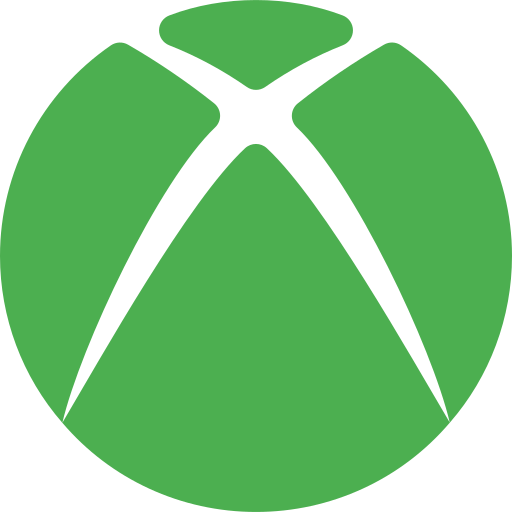
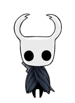
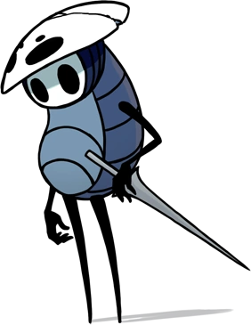

HOLLOW KNIGHT
TEAM CHERRY
TEAM CHERRY
En los bosques agrestes, con respeto y tristeza pronuncian tu nombre,
Nadie podía domar nuestras almas salvajes, pero tú te ganaste el renombre,
Bajo vigilancia pálida, nos enseñaste, cambiamos, redimimos nuestros básicos instintos.
A bicho y bestia les otorgaste un mundo nunca visto.
Hollow Knight es una aventura de acción en 2D donde exploras Hallownest, un vasto y decrépito reino subterráneo de insectos.
Como un misterioso caballero silencioso, desciendes a las profundidades para descubrir los secretos de este mundo,
enfrentarte a criaturas corrompidas por una plaga y combatir contra antiguos y desafiantes jefes.
Hollow Knight puede jugarse en Windows, Linux y Mac.

Hollow Knight se puede adquirir o jugar en PS4 y PS5 mediante la PlayStation Store

Disponible para Switch y Switch 2 a través de la Nintendo eShop.

Disponible para Xbox One y Xbox Series X/S en la tienda Xbox Store.

Caballero es el personaje principal del juego y es el personaje que controlamos a lo largo de Hallownest.

Habilidosa protectora de las ruinas de Hallownest. Empuña una aguja e hilo.

Es uno de los principales NPCs de Hollow Knight, es un viejo explorador que ha olvidado su pasado y ahora busca conocer los misterios de Hallownest.

Zote el Todopoderoso, se ha autoproclamado caballero. Carece de prestigio. Blande un aguijón hecho de maderarmazón al que llama «Terminavidas».
"Enclenque insignificante... Te acercas sin temor. ¿Eres un cazador como yo?
¿Sientes la necesidad de acechar, de matar, de entender?
¡Si es así, cógelo! Mi diario. Te ayudará. Al principio te será difícil
comprenderlo, pero un cazador experimentado logrará entender sus palabras.
Aventúrate en las profundidades de esta tierra y dale muerte a las bestias.
Demuestra que eres digno de llevar la marca del cazador."

El Diario del Cazador es un compendio de todos los enemigos del Hollow Knight, es otorgado al jugador por El Cazador. Derrota enemigos para añadir nuevas entradas al diario. Derrota una cantidad específica de cada enemigo para desbloquear notas adicionales del Cazador sobre dicho enemigo.